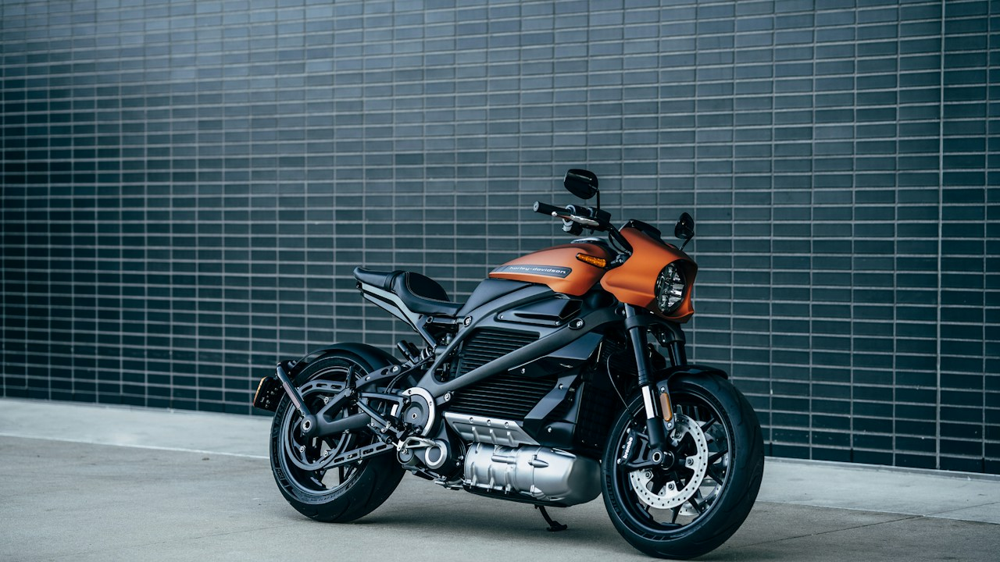

Silent Revolution: How Local Battery Assembly is Electrifying Pakistan's Two-Wheeler Market
With LFP battery pack assembly lines now operational in Karachi and Lahore, electric two-wheelers are poised to transform daily commutes. This strategic shift not only curbs Pakistan's massive fuel import bill but also achieves total cost of ownership parity with petrol bikes, offering much-needed economic relief.

The relentless hum of petrol engines defines urban mobility in Pakistan. From Lahore’s Hafeez Center to Karachi’s I.I. Chundrigar Road, two-wheelers are vital, serving as the backbone of daily commutes for millions. Yet, soaring petrol prices, currently hovering around PKR 290 per liter, have become an unbearable burden for countless households already strained by inflation. A critical shift is underway, however, quietly gaining momentum as local innovation begins to challenge the status quo, promising relief and a cleaner commute for the masses across the nation.
Pakistan's economy grapples with a burgeoning fuel import bill, consistently draining precious foreign exchange reserves. The State Bank of Pakistan (SBP) has consistently highlighted the urgent need to curtail non-essential imports, making a strong case for domestic manufacturing. Launching lithium iron phosphate (LFP) battery pack assembly lines in industrial hubs like Karachi and Lahore isn't just about components; it's a strategic economic pivot, directly addressing the national imperative to reduce dependence on imported fossil fuels and stabilize the Pakistani Rupee. It's about self-reliance.
This isn't merely a move towards 'electric'; it's a calculated transition to LFP technology, renowned for its superior safety, longer lifecycle (often exceeding 2,000 charge cycles), and robust performance even in Pakistan’s diverse climate conditions. Unlike older lithium-ion chemistries, LFP offers enhanced thermal stability, crucial for our hot summers. These state-of-the-art assembly facilities are developing localized expertise, quality control systems, and integration capabilities, laying the groundwork for a truly indigenous EV ecosystem that can scale to meet national demand.
The real game-changer, however, lies in the economics. With local assembly significantly slashing import duties and logistics costs on battery packs—the most expensive component of an EV—electric two-wheelers are now reaching an unprecedented total cost of ownership (TCO) parity with their petrol counterparts. While the initial sticker price for an entry-level model might still seem higher, averaging around PKR 185,000, drastically reduced running costs, leveraging NEPRA-approved electricity tariffs (as low as PKR 14-18 per KWh off-peak), mean commuters save substantially over time, offsetting the upfront investment within a few years.
From Import Dependency to Local Empowerment: The LFP Battery Revolution
The establishment of dedicated LFP battery assembly lines represents a profound leap for Pakistan's industrial landscape. Historically, our reliance on imported finished products was a major vulnerability. New facilities in industrial zones across Karachi and Lahore signify a deliberate move towards self-sufficiency. By importing battery cells and assembling packs locally, manufacturers benefit from lower FBR customs valuations on components versus fully assembled products, passing on crucial cost savings. This strategy conserves foreign exchange and stimulates local employment, fostering a skilled workforce in advanced manufacturing.
Beyond immediate economic advantages, this local assembly initiative cultivates an invaluable ecosystem of expertise. From engineers specializing in battery management systems (BMS) to technicians trained in quality assurance for high-voltage packs, a new generation of technical talent is emerging. This foundational step is essential for future innovation, potentially leading to local cell manufacturing and advanced battery research. It empowers Pakistani businesses to control supply chains more effectively and tailor products for local conditions, ensuring greater reliability and consumer confidence.
Total Cost of Ownership: Decoding the Economics of Electric
The primary barrier to electric two-wheeler adoption has long been their higher upfront cost compared to conventional petrol bikes. While an entry-level petrol bike can be acquired for around PKR 120,000-150,000, a comparable electric model might start from PKR 185,000 to PKR 250,000. However, this initial investment is swiftly recouped through drastically lower running costs. With petrol prices fluctuating wildly and currently hovering near PKR 290/liter, charging an e-bike from the national grid, using NEPRA-approved domestic electricity tariffs (averaging PKR 18-25/KWh, or even lower off-peak), reduces daily commute expenses by over 80%. This makes the higher initial outlay justifiable over the long term.
Maintenance, too, is a negligible factor for electric bikes. They have far fewer moving parts than internal combustion engines, eliminating the need for frequent oil changes, spark plug replacements, and complex engine tuning. This significantly cuts recurring service expenses and increases vehicle uptime. Over a typical 3-5 year ownership period, cumulative fuel and maintenance savings far outweigh the initial price differential, making electric two-wheelers a more financially prudent choice for the average Pakistani commuter. TCO analysis unequivocally demonstrates electric mobility’s long-term economic superiority.
| Cost Factor | Petrol Bike (125cc) | Electric Bike (Entry) | 3-Year Impact |
|---|---|---|---|
| Initial Purchase Price | PKR 145,000 | PKR 200,000 | -PKR 55,000 (Higher for EV) |
| Fuel/Electricity Cost (per 100km) | PKR 725 (2.5L @ 290) | PKR 36 (2kWh @ 18) | PKR 689 Saved |
| Annual Maintenance (Avg.) | PKR 12,000 | PKR 3,000 | PKR 9,000 Saved |
| Estimated 3-Year Running Cost | PKR 270,000 | PKR 45,000 | PKR 225,000 Saved |
| Total Cost of Ownership (3 Years) | PKR 415,000 | PKR 245,000 | PKR 170,000 Saved (for EV) |
Challenges and the Road Ahead: Policy, Infrastructure, and Adoption
Despite the compelling economics, mass adoption of electric two-wheelers faces significant hurdles. A major challenge is robust charging infrastructure; unlike the ubiquity of petrol pumps, dedicated EV charging stations are sparse, particularly outside major urban centers. While home charging is convenient, public charging points are essential for longer commutes and greater range anxiety mitigation. Furthermore, financing remains a bottleneck; although the SBP has encouraged banks to offer concessional rates for EVs, many local institutions are still hesitant or processes cumbersome for the average buyer, creating a substantial hurdle against the higher initial purchase price.
Policy support also requires refinement. While FBR customs duty incentives for parts are welcome, a consistent, long-term national EV policy is crucial for manufacturers to make sustained investments and for consumers to gain confidence. The Special Technology Zones Authority (STZA) in Islamabad offers attractive incentives for tech manufacturers, but extending similar, targeted benefits across the country, especially for EV component makers and assemblers, could accelerate growth. Addressing consumer perception, particularly regarding battery lifespan and performance, through awareness campaigns and robust after-sales service networks, will be vital for widespread acceptance.
Executive Takeaways & Key Insights
- Local LFP battery assembly is key, driving down costs and reducing Pakistan's fuel import bill significantly.
- Electric two-wheelers now offer compelling total cost of ownership parity, saving commuters substantial money long-term.
- Government policies and robust charging infrastructure are essential to accelerate widespread EV adoption across Pakistan.
- This shift promises a greener future, reduces urban pollution, and fosters indigenous manufacturing capabilities.
Frequently Asked Questions
How does an electric bike's range and charging infrastructure compare to traditional petrol bikes in Pakistan?
Most entry-level electric bikes offer 60-80 km range, sufficient for daily commutes. Charging infrastructure is nascent; home charging (3-5 hours from a standard socket) is convenient, but public charging stations are limited. This is a key development area, with startups and some petrol pumps slowly integrating charging points.
What government incentives or subsidies are currently available for purchasing an electric two-wheeler?
Government offers FBR customs duty concessions on imported EV components for local assembly, reducing final bike prices. While direct consumer subsidies are limited, the SBP encourages banks to offer preferential financing for EVs. More comprehensive consumer incentives, similar to four-wheelers, are still under consideration to further boost adoption.
Are financing options readily available for electric two-wheelers in Pakistan, considering their higher initial cost?
Yes, several banks and microfinance institutions are slowly introducing financing for electric two-wheelers, often with lower mark-up rates. However, approval can be lengthy and down payments higher. It’s advisable to check with major banks (e.g., Bank Alfalah, HBL) or specific EV dealerships, which frequently partner with financial institutions to facilitate purchases.